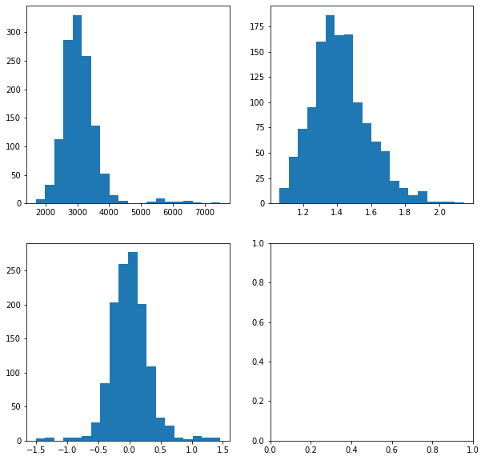

Signal-to-noise ratio calculation¶
Signal
\[\mu =
\sum_{knf, \theta_{nf} = k} \sum_{ij} I_{nfij} \mathcal{N}(i, j \mid x_{knf}, y_{knf}, w_{knf}) - b_{nf}\]
Noise
\[\sigma^2 =
\sigma^2_{\text{offset}} +
\text{gain} \mu\]
Signal-to-noise ratio
\[\text{SNR} = \dfrac{\mu}{\sigma}\]
$ \mathop{\sum_{i
[1]:
import torch
import pyro
import pyro.distributions as dist
import numpy as np
import pandas as pd
import os
import matplotlib.pyplot as plt
[2]:
heights = ["0300", "0500", "0750", "1000", "1500", "2000", "3000"]
pi_z = "15"
lamda_j = "15"
Results¶
[3]:
names = ["0300", "0500", "0750", "1000", "1500", "2000", "3000"]
# snr = [float(name) for name in names]
[4]:
D = 14
background = 150
gain = torch.tensor(7.)
rv = dist.MultivariateNormal(
torch.tensor([6.5, 6.5]),
scale_tril=torch.eye(2) * torch.tensor([1.4])[..., None, None])
D_range = torch.arange(D, dtype=torch.float)
i_pixel, j_pixel = torch.meshgrid(D_range, D_range)
ij_pixel = torch.stack((i_pixel, j_pixel), dim=-1)
[5]:
# calculate signal-to-noise ratio
snr = []
for h in heights:
spot = rv.log_prob(ij_pixel).exp() * float(h)
signal = (spot * rv.log_prob(ij_pixel).exp()).sum()
noise = (background * gain).sqrt()
snr.append(float(signal / noise))
[6]:
snr
[6]:
[0.37588992714881897,
0.6264832615852356,
0.9397249221801758,
1.2529665231704712,
1.8794498443603516,
2.5059330463409424,
3.758899688720703]
Tracker v1.1.3flat
[2]:
from cosmos.models import Tracker
[3]:
name = "h3000pi15lamda15"
path_data = "/shared/centaur/data/height_data/{}".format(name)
path_params = "/shared/centaur/data/height_data/{}/runs/tracker/v1.1.3flat/S1/control/lr0.005/bs5".format(name)
[4]:
model = Tracker(S=1)
model.load(path_data, False, "cpu")
model.load_parameters(path_params)
[5]:
model.offset_samples
[5]:
tensor([89.5000])
[6]:
model.offset_mean
[6]:
tensor(89.5000)
[7]:
snr = model.snr()
[10]:
snr.mean()
[10]:
tensor(2.4466)
[27]:
plt.figure(figsize=(10,10))
plt.subplot(221)
plt.hist(height.numpy(), bins=20)
plt.subplot(222)
plt.hist(width.numpy(), bins=20)
plt.subplot(223)
plt.hist(x.numpy(), bins=20)
plt.subplot(224)
plt.hist(snr.numpy(), bins=20)
plt.show()
---------------------------------------------------------------------------
RuntimeError Traceback (most recent call last)
<ipython-input-27-15b2e631cdbd> in <module>
10
11 plt.subplot(224)
---> 12 plt.hist(snr.numpy(), bins=20)
13 plt.show()
RuntimeError: Can't call numpy() on Tensor that requires grad. Use tensor.detach().numpy() instead.

[ ]:
snr.mean()
[ ]: